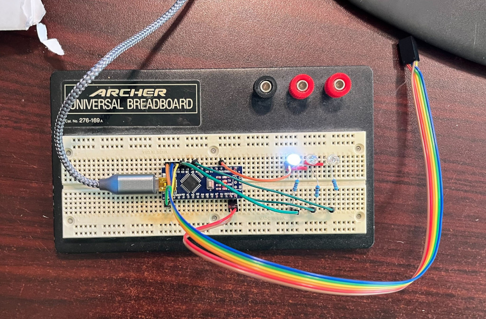

Using an Arduino Nano to burn Arduino Bootloaders
Published: 06/25/2022 22:10:00
Here's a KiCad project for Using an Arduino Nano as an Arduino ISP.
It produces this beautiful board:
Which in this case, I managed to (successfully) mill on the Varnerized ANT CNC.
Backstory
A few weeks ago the heater core on my Varnerized Prusa started shorting out -- in the process of replacing the heater, tuning the PID settings, and flashing the firmware back to the Arduino Mega that controls it, I found out (the hard way) that the USB-C to USB-A converters I have will... rapidly brick an Arduino.
After confirming that it's only those converters that were the problem, I set about to 'unbrick' the Arduinos I'd bricked in the process of verifying that the cables were the problem.
This led me to this most helpful site about Arduino as ISP and Arduino Bootloaders, which contains some sketches and circuits for using healthy Arduinos to burn bootloaders onto 'bricked' Arduinos.
I quickly breadboarded the circuits with parts I had on hand, got the Arduinos in working order, and was happy after I fixed the printer... sorta.
This is a pretty simple schematic, this is a pretty simple circuit, and it's one I can see myself using again in the future -- since I'm pretty sure this is the second time I've had to do this, and I didn't want to leave the circuit sitting on a breadboard on my desk for too long. My old breadboard is pretty clunky.
